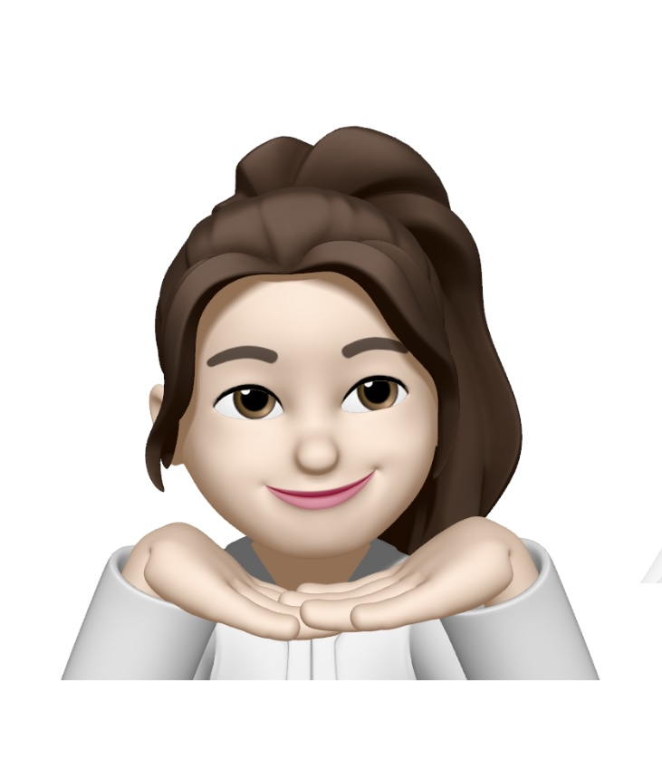

OpenAI DevDay
YuJeong’s first post 이 텍스트는 OpenAI의 개발자 대회(DevDay)에서 Sam Altman이 한 발표의 전문입니다. 그는 OpenAI가 지난 한 해 동안 이룬 성과들을 소개하고, 새로운 기능과 서비스를 발표했습니다. 발표 내용에는 ChatGPT의 ’low-key research preview’로부터 시작하여 GPT-4의 출시, 그리고 음성 및 시각 능력을 갖춘 ChatGPT, 그리고 DALL-E 3와 같은 세계에서 가장 진보된 이미지 모델까지 여러 발전이 포함되었습니다. 그는 또한 OpenAI가 어떻게 사람들의 일상 생활과 창의적 작업을 도와주고 있는지 여러 사례를 통해 보여주었습니다. 이어서 새로운 GPT-4 Turbo 모델, 기능 향상, 더 긴 컨텍스트 길이 지원, JSON 모드, 더 나은 세계 지식, 새로운 모달리티 지원 등을 발표했습니다. 이러한 개선은 개발자들이 더 쉽게 AI를 자신들의 앱과 서비스에 통합할 수 있도록 돕기 위함입니다.
또한, 그는 Microsoft와의 깊은 협력 관계를 강조하며, Microsoft의 CEO인 Satya Nadella가 무대에 올라 두 회사 간의 파트너십과 AI의 미래에 대해 이야기했습니다. 발표의 끝부분에서는 개발자들이 쉽게 자신만의 ChatGPT 버전을 만들고 공유할 수 있는 GPTs라는 새로운 개념을 소개하며, 이를 통해 사용자들이 더 풍부하고 개인화된 경험을 할 수 있게 될 것이라고 설명했습니다.
이 발표는 기술의 진보와 그것이 사회에 미치는 긍정적 영향에 대한 강한 낙관론을 내포하고 있습니다. OpenAI는 AI 기술을 통해 개인의 권한을 강화하고, 창의적인 작업을 돕는 것을 목표로 하고 있으며, 그들이 소개한 새로운 도구들은 개발자들에게 큰 가능성을 열어줄 것으로 보입니다. 이 발표는 AI 기술이 사람들의 삶에 가져올 변화를 두려워하기보다는 그것을 어떻게 활용하고, 우리 사회에 긍정적인 영향을 끼칠 수 있을지에 대해 고민하고 준비해야 함을 강조합니다. OpenAI가 앞으로도 사용자들의 피드백을 바탕으로 시스템을 지속적으로 업데이트하고, AI 기술이 일상 곳곳에 통합될 때 우리 모두가 요구할 때마다 ’수퍼파워’를 갖게 될 미래를 기대하며 발표를 마쳤습니다.
